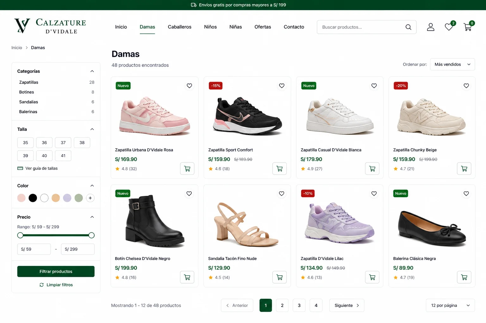
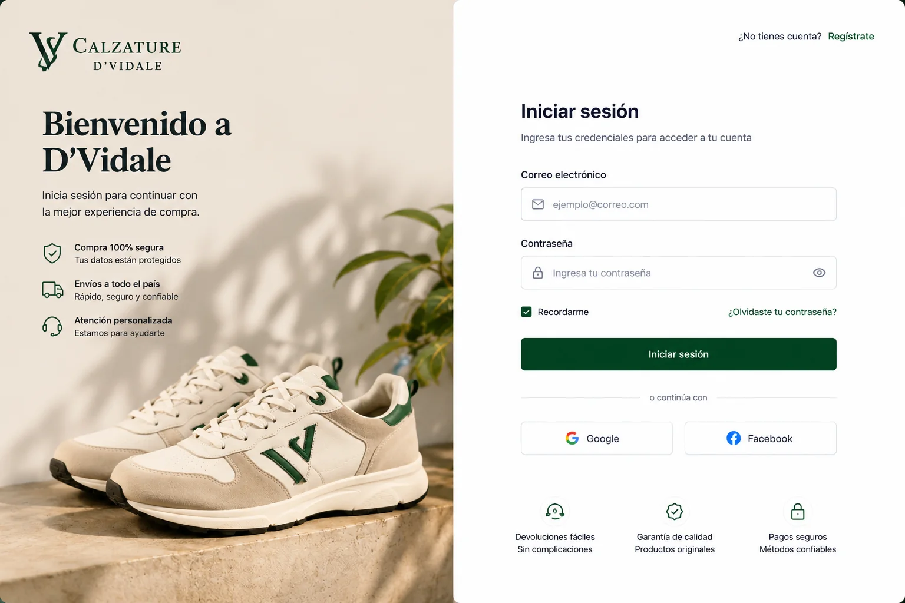

WEB · E-COMMERCE
CALZATURE D’VIDALE
Una tienda virtual centrada en presentar producto, facilitar la navegación y conectar las principales pantallas del flujo de compra.
Hablar de un proyecto
01 / Problema
Qué había que resolver
El proyecto parte de una necesidad concreta: organizar una experiencia de e-commerce con una página de entrada clara, catálogo y acceso de usuario. El trabajo combinó estructura visual y desarrollo web para mantener continuidad entre las pantallas.
02 / Decisiones
Cómo lo planteé
Las decisiones de implementación se enfocaron en mantener el proyecto comprensible y funcional dentro de su alcance.
-
01
Dar prioridad visual al producto y reducir elementos que compitan con el catálogo.
-
02
Mantener patrones de navegación consistentes entre inicio, productos e inicio de sesión.
-
03
Construir la interfaz con tecnologías web directas para controlar cada parte del layout y del comportamiento.
03 / Interfaz
El proyecto en uso.
Capturas directas del proyecto para mostrar la interfaz y el flujo sin marcos decorativos.


04 / Aprendizaje
Qué me dejó el proyecto
Este proyecto sirvió para trabajar la relación entre interfaz y flujo: una pantalla puede verse correcta de forma aislada y aun así fallar si la transición hacia la siguiente acción no es clara.